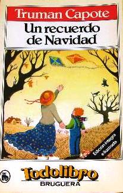

Caseron: Casa muy grande, especialmente si está destartalada y es vieja
Trasquilado: Cortar el pelo [a alguno] sin orden ni arte.
Amorfo: Que no tiene una forma definida.
Desvencijado: Separar las partes de una cosa de modo que ésta pierda su firmeza
Pacanas: Árbol de unos 30 m de altura, con tronco grueso y copa magnífica.
Cicateras: Que da importancia a pequeñas cosas.
Prosaicas: Se refiere a aquello perteneciente o relativo a la prosa.
Beodas: Que tiene alteradas temporalmente las capacidades físicas y mentales por un consumo excesivo de alcohol.
Iracunda: [persona] Que muestra ira o es propenso a ella.
Gimotea: Quejarse con insistencia y sin una causa importante

Truman Streckfus Persons, más conocido como Truman Capote nacido el 30 de septiembre de 1924 Nueva Orleans, Luisiana,Estados Unidos.
Esta es una historia muy interesante debido a que se esta llena de emociones tales como la alegria, sentimentalismo y tristeza, lo que le da al lector un gran interes por ver que sucede con los personajes y como se desarrollan estos.
La historia es narrada por un Buddy adulto. Buddy (que no es su verdadero nombre y que en inglés quiere decir compañero), es un personaje de menor rango. La viejita con alma de joven, que está sin bautizar por el autor, es el personaje principal, y Buddy la llama ?mi amiga? en toda la obra. La perrita de la casa tiene su nombre: Weenie, y el indio también tiene nombre: Jejé Jones.
En mi opinion despues de terminar la lectura y analizarla lo mejor posible, esta llena de melancolias, alegrias y sentimentalismo, es una historia conmovedora que trata sobre una viejita de sesenta y tantos, pero que seguia con un alma de joven viendose extraña ante sus familiares, tal parece ser toda su vida la vivio en una casa y solamente salia a vender tartas(pasteles) en la temporada navideña.
Existe otro personaje llamado Buddy el cual se refiere a la viejita como su amiga en toda la historia, el solamente tiene 7 años y la acompaña en su aventura de hacer tartas, relata todas las adversidades que pasaron juntos asi como sus alegrias.
En lo personal es una gran historia, el como se desarrolla me hizo querer seguir adelante, al finalizar me dio cierto sentimiento de tristeza, al ver como la amiga de Buddy despues de la temporada de tartas su vida termina, sin embargo gracias a Buddy ella tiene momentos de felicidad hasta bebieron whisky, lo cual provoca conflicto con sus familiares.
Realmente me agrado demasiado la lectura y se la recomiendo a todo el publico, se que les gustara.